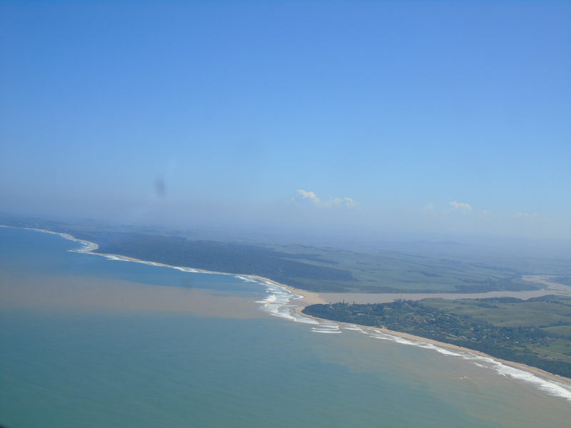

![]()

Marine ecosystems and species face pressures from an increasing range and intensity of human activities that continue to expand and diversify as South Africa develops its ocean economy. Fishing, particularly widespread industrial fishing, continues to exert substantial pressures on marine biodiversity, affecting ecosystems, species and genetic diversity. Mining, petroleum, flow reduction, port and harbour development and shipping also drive ecosystem modification and risk to marine species with increasing pollution (plastics, underwater noise, waste water and effluent) and climate change concerns. Pressure mapping needs to be updated and improved for more accurate assessments and planning, especially at finer scales.

Cumulative Pressures
South Africa uses cumulative pressure mapping as a key input into the assessment of marine ecosystem threat status. A total of 31 pressures have been mapped to support biodiversity assessment and spatial planning1. These include historical pressures that may have ceased in some areas but have contributed to long-term changes in ecological condition. Both the number and intensity of pressures is considered in cumulative pressure mapping.
Areas with high cumulative pressures include most bays, the area offshore of the Orange River, the shelf edge off the west and south coasts, large portions of the Cape inner and middle shelf, the Agulhas Bank and the KwaZulu-Natal Bight (Figure 1). The highest cumulative pressure in the marine realm was recorded in Saldanha Bay.
Hotspots of degradation and cumulative impacts are often driven by the location of ports and harbours, which alter shorelines and circulation, increase urbanisation and access for fishers, increase pollution, and facilitate the introduction and spread of invasive species. New ports and harbours can have substantial impacts on marine biodiversity and livelihoods and therefore warrant careful evaluation in spatial planning and decision-making.
Skein et al. (2022) examined 17 key pressures from 17 different sectors and their links to 23 key ecosystem characteristics (Figure 2) that have implications for ecosystem services2. Fishing, petroleum (referred to as “Non-renewable (oil and gas)” in Figure 2) and shipping had the most widespread effects across the most ecosystem components, accounting for 30% of total linkage pathways identified, with fishing showing the most linkages overall. This is due to the extensive and complex nature of these three sectors, each of which comprise various components that may impact marine life in different ways. For example, offshore oil and gas sector activities include exploration (invasive and non-invasive), production and transport, each exerting different pressures on marine biodiversity. Anticipated renewable energy installations will have implications for marine ecosystems and species in future, through increased underwater noise, habitat modification and wildlife collisions, depending on the energy source.

Pervasive pressures with multiple drivers (Cross-cutting pressures) include pollution emanating from industrial, municipal and agricultural sources, ocean noise associated with activities such as shipping, mining and petroleum exploration, light pollution from artificial light at night especially in coastal areas, and invasive alien species.
Climate change and ocean acidification, primarily caused by increased greenhouse gas emissions, cause diverse and interrelated pressures that impact marine biodiversity and ecosystem health. Furthermore, by creating stressful environmental conditions (e.g. altered temperatures or reduced oxygen levels), climate change and ocean acidification increase the vulnerability of marine life to other pressures such as pollution or the impacts of fishing.
The indirect and cumulative impacts of expanding ocean activities need more attention in marine environmental management. Failure to account for potential cumulative and indirect impacts will preclude such impacts from being taken into account in spatial planning and decision-making, with likely negative implications for people and the environment.
Sector and pressure overviews
Pressure data sets are important inputs into spatial assessments and planning. Marine pressure data for South Africa is described in the 2018 NBA marine technical report1 that explained and mapped each pressure, summarised patterns in their extent and intensity, and reviewed their known biodiversity impacts, noting any known mitigation measures or relevant work that was underway. Drawing on the above and information that is available in more recent National Data and Information Report for Marine Spatial Planning3, a brief summary of sectors and pressures is provided below (only references not previously cited in Majiedt et al. (2019) are indicated).
In general, updating and improvement of pressure data sets are required. Outdated pressure maps, pressure data that are missing or of a poor resolution, and inaccurate estimation of pressure impacts on ecological condition, all reduce the accuracy of biodiversity assessments and the efficacy of spatial planning. For example, missing pressure data in certain areas or for certain sub-sectors (such as small-scale fishing) omits key rightsholders and compromises integrated and equitable spatial planning. Long-term pressure data series are needed for ecosystem and species assessment (key message B5) and finer scale mapping for more accurate assessment of ecological condition.
Fishing

Lethal shark control
Coastal and offshore mining
Marine petroleum activities

Shipping
Coastal development
Mariculture
Freshwater flow reduction

Wastewater discharge

Dredge disposal
Ammunition disposal

Renewable energy production
Cross-cutting pressures
Pollution (including underwater noise)
Pollution is a cross-cutting pressure linked to many sectors with chemical (including plastic), pharmaceutical, noise and light pollution all increasing. Plastic, both micro- and macro-plastic, is pervasive and has been recorded at great depths and distance from shore, although its main source is land-based pollution. Plastic pollution has impacts on many marine species through ingestion and entanglement, especially seabirds, turtles, sharks and fish. South African research is increasing and providing valuable insights into this global concern38–41, which recently has also been linked to the spread of alien and invasive species and identified as a vector for toxic metals42. Other common pollutants in the marine realm are heavy metals and hydrocarbons, especially in ports and harbours43,44.
Ingestion and bioaccumulation of microplastics, metals, pharmaceutical compounds, personal care products and other organic pollutants in animal tissues potentially leads to their biomagnification in marine food webs32,38,45. This poses toxic risks to lower and higher trophic level biota and humans who consume them. Bioaccumulation of pesticides and herbicides in coral reef organisms is an increasing concern33,46, while high concentrations of metals, other chemicals, and pollutants have been detected in sediments (especially in ports and harbours), surf zones of popular recreational beaches and in sponges within submarine canyons. These pollutants have also been found in turtles and their eggs, seabirds and seabird eggs, fish, cetaceans, sharks and marine mammals.
Light pollution or artificial light at night can negatively impact species and ecosystems by interrupting species’ natural circadian rhythms, changing night-time activity through either negative or positive phototaxis47,48. Feeding, breeding and resting behaviours are affected with impacts on turtle hatchlings and seabirds and beach invertebrates of particular concern29,30,47. For example, several beach species including the Endangered Cape pill bugs, Tylos capensis (nocturnal sandy beach isopods29) are significantly less active at night when exposed to higher light intensities, which reduces their foraging time. Light pollution can also affect navigation of seabirds and cause grounding with risk of injury or mortality49. There is increasing concern regarding the effect of artificial light at night on phytoplantkton and cyanobacteria in aquatic ecosystems and potential increased risks of harmful algal blooms with calls for increased research on this topic50.
Good practice in mitigating light pollution includes measures to direct, shield and reduce duration, angle and intensity of light51. Effective communication about the impacts of artificial light at night and opportunities to address light pollution while supporting energy reduction and climate change is needed in South Africa. Reducing light pollution in protected and conserved areas is particularly important51 and can also contribute to cultural heritage protection, star gazing opportunities and astronomy research.
Noise pollution is an increasing concern, particularly in aquatic environments where sound conductivity is greater than in air and where many species rely on sound for prey location and communication27,52. Sources of sound include seismic surveys26, shipping traffic, bunkering53, various other commercial activities, and boating. Elevated underwater noise can cause direct mortality, lower immunity and increase health risks, change species distributions and disrupt foraging when predators, prey, or both avoid noisy areas, and disrupt reproduction, communication and social behaviour.

Marine mammals and soniferous fish are particularly at risk, including commercially important species such as kingklip, recreationally important species such as grunter and threatened species such as dusky kob and Syngnathid seahorses and pipefish. Recently, penguins have shown sensitivity to underwater noise53 and there is concern that current mitigation measures for seismic surveys may be inadequate in managing impacts on marine animals54. Although there are many known impacts from underwater noise, there are still many gaps in our understanding of these pressures55 and how they may translate into ecosystem impacts. It is recommended that noise sensitive marine areas are proactively mapped and used to inform marine spatial planning and management26 and there is increasing collaborative efforts to provide guidance in protecting marine fauna from noise.
Invasive alien species

Invasive alien species have profound negative impacts on marine biodiversity with increasing numbers of introduced marine species in South Africa56,57. Alien species have the potential to displace native species, cause the loss of native genotypes, modify habitats, change community structure, affect food web properties and ecosystem processes, impede the provision of ecosystem services, impact human health and cause substantial economic losses.
The main mechanisms of accidental introductions are ship fouling, ballast water and mariculture58, with increasing recognition of the role of petroleum infrastructure and recreational boating in the introduction and intra-regional spread of invasive species. The expanding aquarium trade is also a potential source of introductions.
Preventing marine invasives and limiting spread is vital as research shows that eradication in the marine realm is not feasible. This means that prevention is critical and key pathways, particularly ballast water and hull fouling, require management action. Strategic monitoring is also recommended59 and ringfenced resources are needed to enable rapid management action (key message A4).
South Africa needs to promulgate the Ballast Water Act which has been in Bill form since 2013 and invest in innovative methods and partnerships to reduce hull fouling and the spread of marine invasives (Priority actions 3 and 9). Increased efforts are needed to prevent marine invasive species introduction in MPAs and coastal conservation areas. Innovative communication and citizen science can help inform industry and civil society to help prevent and detect introductions.
Climate change

Climate change exacerbates impacts of pressures on marine species and ecosystems through multifaceted pathways, decreasing resilience and threatening coastal communities and livelihoods60–62. South Africa’s oceans are changing with increased winds, upwelling and cooling being observed in some areas, and warming in others58. Increased storm events, sea-level rise, intensification of current variability and increased frequency and intensity of extreme events have also been observed, and work is underway to support baselines to detect any potential changes in pH through ocean acidification63–65.
The impacts of these changes have been documented across a wide variety of marine taxa including kelp, other seaweeds, foraminifera, corals, sponges, molluscs, crustaceans, copepods, fish and seabirds66. Reported impacts include shifts in the distribution of species and communities, changes in species abundance, altered behaviour, hybridisation, increased spread of invasive species, and long-term declines in fished stocks and copepods. Coral bleaching is increasing46 and there is a need to invest in coral monitoring to track reef health. South Africa’s three coral ecosystem types are now considered Vulnerable to ecosystem collapse (see threat status page) and 34% of the 128 shallow reef building corals reported in South Africa have now been assessed as threatened (see species summary page).
Climate change does not act in isolation, it interacts with other anthropogenic pressures and understanding these interactions is critical for effective conservation and climate mitigation strategies to protect biodiversity and ecosystem sustainability67. The complexity and variability of South Africa’s marine systems, combined with multiple anthropogenic stressors, make future climate impacts difficult to predict, but there is high certainty that negative impacts on biodiversity, ecosystem function, food security and valuable economic industries will continue to escalate.
Greenhouse gas reductions and biodiversity-friendly renewable energy are important for mitigating climate change (key message A1). In addition, coastal ecological infrastructure should be maintained and restored in the interests of coastal climate change adaptation. Climate-buffering ecological infrastructure such as wave attenuating reefs and kelp forests and intact coastal dune systems can be safeguarded and restored through improved coastal planning and science-based restoration.
Progress could be supported through integrated solutions involving biodiversity, society and climate action (key message A1), biodiversity-inclusive co-ordinated coastal and marine spatial planning (key message A2), and strategic restoration guided by robust science (key message B3). Multiple potential indicators of progress in reducing climate risks to people and marine biodiversity have been identified (see priority actions 9 and 10).
Approach
Pressure data are a key input into ecosystem assessments including the assessment of ecosystem condition, ecosystem threat status and the IUCN Red List of Ecosystems. The 2025 marine ecosystem assessment drew largely on the pressure data and information from the previous assessment68, in which Majiedt et al. (2019) comprehensively reviewed and mapped 31 sources of pressure (spatial extent and intensity where feasible) on marine biodiversity in South Africa. These included 18 fisheries sectors, lethal shark control measures, mining, petroleum, shipping, ports and harbours, coastal development, coastal disturbance, mariculture, invasive species, freshwater flow reduction, waste water discharge, dredge material disposal and ammunition dumping. Climate change literature was reviewed and synthesised60 and invasive species research56 was also considered.
Limited progress in pressure mapping was achieved for the 2025 assessment but seismic surveys and submarine cables were mapped for inclusion in future assessments and an improved, finer resolution demersal trawl fishing layer was compiled69. Literature reviews and new collaborations to improve research on underwater noise (26,70,71) helped collate literature, provide insights and identify research priorities for understanding the potential impacts and mitigation options for seismic surveys. The information available in the National Data and Information Report for Marine Spatial Planning provided relevant information in terms of the impacts and mitigation of pressures in the marine realm. Work towards an Integrated Ecosystem Assessment for South Africa2 also improved the understanding of pressure on marine biodiversity and was a key informant in the 2025 assessment.
Acknowledgements
All contributors to the NBA 2018 pressure assessment are acknowledged. We thank Matt Dickens from the KwaZulu-Natal Sharks Board for providing key statistics and useful information on the shark nets and baited drum lines used in South Africa. We are grateful to Lisa Skein, Lynne Shannon and Kelly Ortega Cisneros for their work towards an Integrated Ecosystem Assessment under the Mission Atlantic project (see below). Merle Sowman is thanked for sharing information related to coastal and marine mining.
We thank international funders for supporting mapping of seismic surveys and updated demersal trawl activity in South Africa. International funding support was provided through the European Union’s Horizon 2020 Research and Innovation Program under Grant Agreement No. 862428 (Mission Atlantic project) and the UK Research and Innovation (UKRI) through the Global Challenges Research Fund (GCRF), Grant ref: NE/S008950/1, for the One Ocean Hub project. We also acknowledge all participants in the Sound Seas (National Research Foundation (Ref number ACEP23040790163)) special session held at the International Marine Conservation Congress in 2024. We thank all members of the Marine Ecosystem Committee, the Marine Ecosystem Network and the Marine Emerging Researchers task team who support the assessment of marine biodiversity in South Africa.
Technical documentation
Code repositories
Key publications
Majiedt, P.A. et al. 2019. Pressures on marine biodiversity. In Sink, K. et al. (eds),: 152–246. Pretoria, South Africa.
Wilkinson, S. et al. 2024. Advancing the mapping and understanding of the potential impacts of seismic surveys in south africa’s oceans. South Africa.
Currie, J. et al. 2023. Mapping fine-scale demersal trawl effort for application in ecosystem assessment and spatial planning. African Journal of Marine Science 1–15. https://doi.org/10.2989/1814232X.2023.2241885
Recommended citation
Sink, K.J., Kirkman, S.P., Harris, L.R., Van der Bank, M.G., Besseling, N.A., Majiedt, P.A., Currie, J.C., Van Niekerk, L., Farthing, M.W., Wilkinson, S., Robinson-Smythe, T.B., Porter, S.N., Oliver, J., Hambile, N., Karenyi, N., Atkins, S., & Atkinson, L.J. 2025. Pressures: Marine realm. National Biodiversity Assessment 2025. South African National Biodiversity Institute. http://nba.sanbi.org.za/.
References
1. Majiedt, P.A. et al. 2019. Pressures on marine biodiversity. In Sink, K. et al. (eds),: 152–246. Pretoria, South Africa.
2. Skein, L. et al. 2022. Scoping an integrated ecosystem assessment for South Africa. Frontiers in Marine Science 9: 975328. https://doi.org/10.3389/fmars.2022.975328
3. DFFE. 2021. National data and information report for marine spatial planning: Knowledge baseline for marine spatial planning in south africa. Cape Town, South Africa.
4. Van der Bank, M.G. et al. 2019. Chapter 9: The state of indigenous species. In Sink, K.J. et al. (eds), South African National Biodiversity Institute. http://hdl.handle.net/20.500.12143/6372, Pretoria.
5. Department of Forestry, Fisheries and the Environment. 2022. South Africa’s second National Plan of Action for the Conservation and Management of Sharks (NPOA-Sharks II).
6. Franken, M. 2025. A systematic approach to the identification, mapping and spatial prioritisation of Vulnerable Marine Ecosystems in South Africa.
7. Potts, W.M. et al. 2022. Understanding the economic activity generated by recreational fishing in South Africa provides insights on the role of recreational fisheries for social development. Fisheries Management and Ecology 29: 29–43. https://doi.org/10.1111/fme.12515
8. Viana, S. et al. 2025. Exploratory characterisation of recreational fishing for skipjack tuna Katsuwonus pelamis and eastern little tuna *Euthynnus* affinis in South Africa. African Journal of Marine Science 47: 105–115. https://doi.org/10.2989/1814232X.2024.2442971
9. Potts, W. et al. 2020. Editorial overview: recommendations for the promotion of a resilient linefishery in the Anthropocene. African Journal of Marine Science 42: 255–267. https://doi.org/10.2989/1814232X.2020.1824738
10. Bova, C.S. et al. 2022. Is the instrumental approach a ‘silver bullet’ for addressing non-compliance in recreational fisheries: A South African case study. Fisheries Research 255: 106439. https://doi.org/10.1016/j.fishres.2022.106439
11. Kramer, R. et al. 2017. Changes in recreational shore anglers’ attitudes towards, and awareness of, linefish management along the KwaZulu-natal coast, South Africa. African Journal of Marine Science 39: 327–337. https://doi.org/10.2989/1814232X.2017.1373704
12. Farthing, M. et al. 2025. A conservation strategy to halt the decline of kob ((Argyrosomus) populations in South Africa.
13. Department of Forestry, Fisheries and the Environment (DFFE). 2025. Status of the South African Marine Fishery Resources 2025. Cape Town. https://doi.org/http://dx.doi.org/10.15493/DFFE.10000008
14. Mannheim, S.L. et al. 2018. Working with, not against recreational anglers: Evaluating a pro-environmental behavioural strategy for improving catch-and-release behaviour. Fisheries Research 206: 44–56. https://doi.org/10.1016/j.fishres.2018.04.016
15. Allison, C. et al. 2023. Can social media platforms be used to foster improved environmental behaviour in recreational fisheries? Fisheries Research 258: 106544. https://doi.org/10.1016/j.fishres.2022.106544
16. Butler, E.C. et al. 2017. An assessment of the health and survival of fishes caught-and-released in high-energy surf zones during a South African competitive angling event. Fisheries Research 195: 152–168. https://doi.org/10.1016/j.fishres.2017.07.002
17. Mann, B.Q. et al. 2018. Is catch-and-release shore angling compatible with the conservation goals of marine protected areas? A case study from the iSimangaliso Wetland Park in South Africa. Fisheries Research 208: 179–188. https://doi.org/10.1016/j.fishres.2018.07.021
18. da Silva, J. & B. van Vuuren. 2019. Chapter 10: The genetic perspective on marine biodiversity. In Sink, K.J. et al. (eds), South African National Biodiversity Institute. http://hdl.handle.net/20.500.12143/6372, Pretoria.
19. Oosthuizen, C.J. et al. 2024. Genetic consequences in the southern African endemic seabream Polysteganus undulosus (Sparidae) after eight decades of overfishing. African Journal of Marine Science 46: 205–216. https://doi.org/10.2989/1814232X.2024.2384454
20. Schulze, M.J. et al. 2020. Supporting Fisheries Management With Genomic Tools: A Case Study of Kingklip (Genypterus capensis) Off Southern Africa. Frontiers in Marine Science 7: 557146. https://doi.org/10.3389/fmars.2020.557146
21. Forde, S. et al. 2025. Management and conservation implications of cryptic population substructure for two commercially exploited fishes (Merluccius spp.) in southern Africa. Molecular Ecology Resources 25: e13820. https://doi.org/10.1111/1755-0998.13820
22. Riley, M.J. et al. 2026. Systematic review and meta-analysis of studies testing the efficacy of shark-bite mitigation. Marine Policy 184: 106934. https://doi.org/10.1016/j.marpol.2025.106934
23. Biccard, A. et al. 2018. Desktop study of the potential impacts of marine mining on marine ecosystems and marine biota in South Africa inception report.
24. Rangel-Buitrago, N. et al. 2023. The global impact of sand mining on beaches and dunes. Ocean & Coastal Management 235: https://doi.org/10.1016/j.ocecoaman.2023.106492
25. Manona, S. et al. 2024. Sand mining governance in post-apartheid south africa: Interlegalities of resource extraction on the wild coast. The Extractive Industries and Society 20: https://doi.org/10.1016/j.exis.2024.101542
26. Wilkinson, S. et al. 2024. Advancing the mapping and understanding of the potential impacts of seismic surveys in south africa’s oceans. South Africa.
27. Duarte, C.M. et al. 2021. The soundscape of the Anthropocene ocean. Science 371: eaba4658. https://doi.org/10.1126/science.aba4658
28. Claassens, L. et al. 2022. How developed is the South African coast? Baseline extent of South Africa’s coastal and estuarine infrastructure. Ocean & Coastal Management 222: https://doi.org/10.1016/j.ocecoaman.2022.106112
29. Harris, L. et al. 2025. Sandy beach ecosystem and species red listing highlight priorities for beach conservation and restoration. Estuarine Coastal and Shelf Science 324: 14. https://doi.org/10.1016/j.ecss.2025.109447
30. Harris, L. et al. 2025. Indicators for tracking progress in effective, representative ecosystem protection. Conservation Biology.
31. Porter, S.N. et al. 2018. Accumulation of organochlorine pesticides in reef organisms from marginal coral reefs in South Africa and links with coastal groundwater. Marine Pollution Bulletin 137: 295–305. https://doi.org/10.1016/j.marpolbul.2018.10.028
32. Ojemaye, C.Y. & L. Petrik. 2022. Pharmaceuticals and personal care products in the marine environment around False Bay, Cape Town, South Africa: Occurrence and risk-assessment study. Environmental Toxicology and Chemistry 41: 614–634. https://doi.org/10.1002/etc.5053
33. Tyohemba, R.L. et al. 2022. Accumulation of commonly used agricultural herbicides in coral reef organisms from iSimangaliso Wetland Park, South Africa. Environmental Pollution 294: 118665.
34. Smith, V.J. et al. 1995. Disturbance of host defence capability in the common shrimp, Crangon crangon, by exposure to harbour dredge spoils. Aquatic Toxicology 32: 43–58. https://doi.org/10.1016/0166-445X(94)00078-5
35. Smith, S.D.A. & M.J. Rule. 2001. The Effects of Dredge-Spoil Dumping on a Shallow Water Soft-Sediment Community in the Solitary Islands Marine Park, NSW, Australia. Marine Pollution Bulletin 42: 9.
36. Bełdowski, J. et al. 2019. Sea-dumped ammunition as a possible source of mercury to the Baltic Sea sediments. Science of The Total Environment 674: 363–373. https://doi.org/10.1016/j.scitotenv.2019.04.058
37. Beck, A.J. et al. 2022. Explosives compounds from sea-dumped relic munitions accumulate in marine biota. Science of the Total Environment 806: 151266.
38. Bakir, A. et al. 2020. Microplastics in commercially important small pelagic fish species from South Africa. Frontiers in Marine Science 7: 574663. https://doi.org/10.3389/fmars.2020.574663
39. Ryan, P.G. 2020. The transport and fate of marine plastics in South Africa and adjacent oceans. South African Journal of Science 116: https://doi.org/10.17159/sajs.2020/7677
40. Sparks, C. & S. Immelman. 2020. Microplastics in offshore fish from the Agulhas Bank, South Africa. Marine Pollution Bulletin 156: 111216. https://doi.org/10.1016/j.marpolbul.2020.111216
41. Ferguson, L. et al. 2024. Microplastic concentrations and risk assessment in water, sediment and invertebrates from simon’s town, south africa: heliyon. Heliyon 10: 14. https://doi.org/10.1016/j.heliyon.2024.e28514
42. Awe, A. et al. 2025. Metals associated with Beach plastic litter at Woodbridge Island and Derdesteen in Table Bay, South Africa. Microplastics and Nanoplastics 5: 13. https://doi.org/10.1186/s43591-025-00117-w
43. Mehlhorn, P. et al. 2021. Spatial distribution and consequences of contaminants in harbour sediments a case study from Richards Bay Harbour, South Africa. Marine Pollution Bulletin 172: https://doi.org/10.1016/j.marpolbul.2021.112764
44. Mbandzi-Phorego, N. et al. 2024. Metal bioaccumulation in marine invertebrates and risk assessment in sediments from south african coastal harbours and natural rocky shores. Environmental Pollution 355: https://doi.org/10.1016/j.envpol.2024.124230
45. Newman, B.K. et al. 2024. Occurrence and potential hazard posed by pharmaceutically active compounds in coastal waters in Cape Town, South Africa. Science of The Total Environment 949: 174800. https://doi.org/10.1016/j.scitotenv.2024.174800
46. Porter, S.N. et al. 2021. The Third Global Coral Bleaching Event on the Marginal Coral Reefs of the Southwestern Indian Ocean and Factors That Contribute to Their Resistance and Resilience. Diversity 13: 464. https://doi.org/10.3390/d13100464
47. Duarte, C. et al. 2019. Artificial light pollution at night (ALAN) disrupts the distribution and circadian rhythm of a sandy beach isopod. Environmental Pollution 248: 565–573. https://doi.org/10.1016/j.envpol.2019.02.037
48. Fobert, E. et al. 2023. The impacts of artificial light at night on the ecology of temperate and tropical reefs. Philosophical Transactions B 378: 11. https://doi.org/10.1098/rstb
49. Heswall, A. et al. 2022. Artificial light at night correlates with seabird groundings: mapping city lights near a seabird breeding hotspot. PeerJ 10: 23. https://doi.org/10.7717/peerj.14237
50. Fonvielle, J. et al. 2025. Skyglow increases cyanobacteria abundance and organic matter cycling in lakes. Water Research 278: 123315. https://doi.org/10.1016/j.watres.2025.123315
51. Welch, D. et al. 2024. The world at night. IUCN.
52. Nelms, S.E. et al. 2016. Seismic surveys and marine turtles: An underestimated global threat? Biological Conservation 193: 49–65. https://doi.org/10.1016/j.biocon.2015.10.020
53. Pichegru, L. et al. 2022. Maritime traffic trends around the southern tip of Africa . Science of The Total Environment 849: 157878.
54. Purdon, J. et al. 2025. Determining sound exposure levels for marine fauna during a past seismic survey to inform effective mitigation measures in south african waters. Ocean & Coastal Management 270: 107893.
55. Elliott, B. et al. 2019. Critical information gaps remain in understanding impacts of industrial seismic surveys on marine vertebrates. 39: 247–254. https://doi.org/10.3354/esr00968
56. Miza, S.A. et al. 2019. Chapter 5: Alien and invasive species. In Sink, K.J. et al. (eds), South African National Biodiversity Institute. http://hdl.handle.net/20.500.12143/6372, Pretoria.
57. Robinson, T.B. et al. 2020. Coastal Invasions: The South African Context. In Wilgen, B.W. van et al. (eds),: 229–247. Springer Nature, Cham. https://doi.org/10.1007/978-3-030-32394-3_9
58. Wilgen, N. van et al. 2022. Climate Change and Biological Invasions in South Africa. In Ziska, L. (eds),: 158–187. CABI, South Africa. https://doi.org/10.1079/9781800621459.0009
59. Loureiro, T. et al. 2021. Dropping plates to pick up aliens: Towards a standardised approach for monitoring alien fouling species. African Journal of Marine Science 43: 483–497. https://doi.org/10.2989/1814232X.2021.1989488
60. Kelly, C. et al. 2019. Chapter 6: Climate change. In Sink, K.J. et al. (eds), South African National Biodiversity Institute. http://hdl.handle.net/20.500.12143/6372, Pretoria.
61. Duncan, M.I. et al. 2019. Exploitation may influence the climate resilience of fish populations through removing high performance metabolic phenotypes. Scientific Reports 9: 1–10. https://doi.org/10.1038/s41598-019-47395-y
62. Mbokodo, I. et al. 2020. Heatwaves in the Future Warmer Climate of South Africa. Atmosphere 11: 712. https://doi.org/10.3390/atmos11070712
63. Edworthy, C. et al. 2022. A baseline assessment of coastal pH variability in a temperate south african embayment: Implications for biological ocean acidification research. African Journal of Marine Science 44: 367–381. https://doi.org/10.2989/1814232X.2022.2147999
64. Porter, S. et al. 2022. Report on Ocean Acidification Monitoring in the Western Indian Ocean. WIOMSA Series Final.
65. Edworthy, C. et al. 2023. The role of macroalgal habitats as ocean acidification refugia within coastal seascapes. Cambridge Prisms: Coastal Futures 1: 1–10. https://doi.org/10.1017/cft.2023.9
66. McClanahan, T. et al. 2024. Complex multivariate model predictions for coral diversity with climatic change. Ecosphere 15: e70057. https://doi.org/10.1002/ecs2.70057
67. Cooley, S. et al. 2023. Oceans and coastal ecosystems and their services. : 379550. Cambridge University Press, USA.
68. Sink, K.J. et al. 2019. National biodiversity assessment 2018: Technical report volume 4: Marine realm. South African National Biodiversity Institute, Pretoria.
69. Currie, J. et al. 2023. Mapping fine-scale demersal trawl effort for application in ecosystem assessment and spatial planning. African Journal of Marine Science 1–15. https://doi.org/10.2989/1814232X.2023.2241885
70. Sink, K. et al. 2022. Impacts of seismic surveys on marine biodiversity: current knowledge and research priorities.
71. Anonymous. 2022. Science plan for research and monitoring of seismic effects on marine life in South Africa. South Africa.